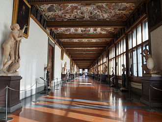
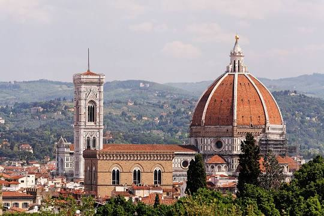
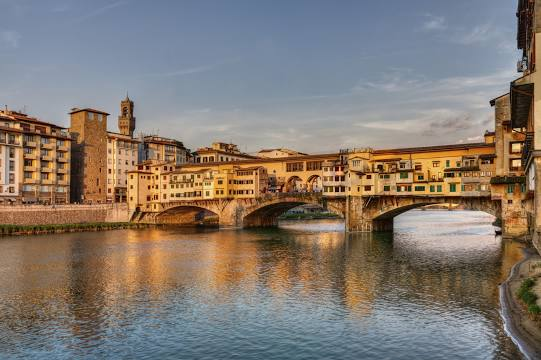
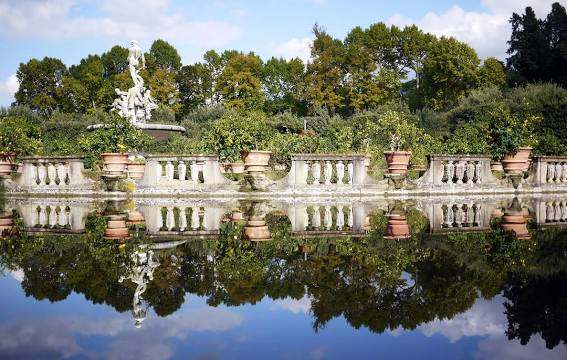

The Uffizi Gallery is a prominent art museum located adjacent to the Piazza della Signoria in the Historic Centre of Florence in the region of Tuscany, Italy. It is also one of the largest and best known in the world and holds a collection of priceless works, particularly from the period of the Italian Renaissance.

Florence Cathedral, formally the Cattedrale di Santa Maria del Fiore, is the cathedral of Florence, Italy. It was begun in 1296 in the Gothic style to a design of Arnolfo di Cambio and was structurally completed by 1436, with the dome engineered by Filippo Brunelleschi.

The Ponte Vecchio is a medieval stone closed-spandrel segmental arch bridge over the Arno River. It is noted for the shops built along it, as was once common. Butchers, tanners, and farmers initially occupied the shops; the present tenants are jewelers, art dealers, and souvenir sellers.

The Boboli Gardens is a historical park of the city of Florence that was opened to the public in 1766. Originally designed for the Medici, it represents one of the first and most important examples of the Italian garden, which later served as inspiration for many European courts.
